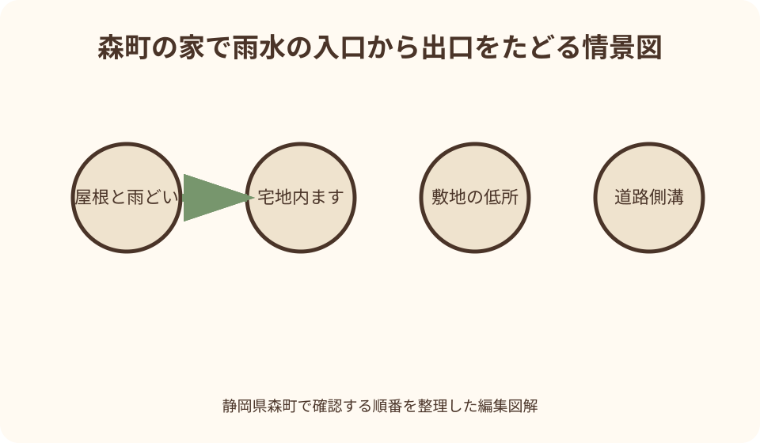
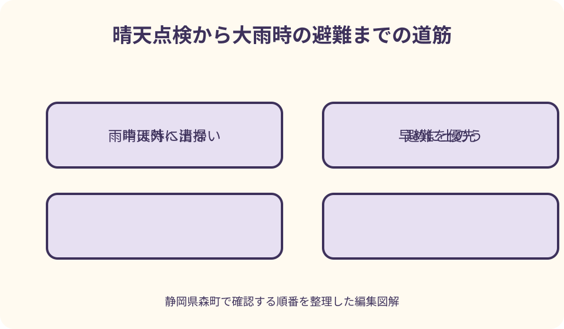

防災・家族の備え｜最終確認 2026-08-10
静岡県森町の大雨前に排水を確認｜雨どい・側溝・敷地勾配の点検
排水点検は、雨の日に側溝へ出て詰まりを取る作業ではありません。晴れて安全な日に、屋根から雨どい、縦どい、宅地内の雨水ます、敷地出口までをたどり、管理者と危険箇所を記録する作業です。雨が強くなってからは屋外へ出ず、避難と情報確認を優先します。

編集イラスト結論：雨水の入口・通り道・出口を晴天時に一本でたどる
最初に、雨水が屋根のどこへ落ち、雨どいからどの縦どいを通り、地面のますや排水溝へ入るかを見ます。次に、その水が敷地内をどう進み、道路側溝や浸透施設などの出口へ達するかを図へ描きます。
点検は雨の予報が出る前、足元と屋根が乾いている日に行います。大雨の最中に側溝のごみを取る、流れを確かめに川へ近づく、詰まりを探して床下へ入る行動は危険です。雨が強くなったら屋内退避または早めの避難へ切り替えます。
落ち葉を取れば全て解決するとは限りません。縦どいの破損、埋設管の詰まり、敷地勾配、道路側溝の水位、裏山からの流入など原因は複数あります。自分で見える範囲と、専門家や管理者へ確認する範囲を分けます。
浸水履歴がある家は、どこから何時に水が来たか、雨の強さ、側溝の状態、床下・玄関・勝手口の高さを写真と時刻で残します。大雨前の点検と雨後の記録を重ねると、次の工事や土のう配置の判断材料になります。
森町の一次情報が示す大雨前の備え
森町公式の自然災害案内は、台風が近づく前に家の周囲を見回り、飛びやすい物を屋内へ入れ、雨どいを掃除するよう案内しています。また、側溝があふれるような雨では小河川の氾濫や崖崩れが始まり得ると注意を促しています。
同ページは、浸水が心配される地域では近隣と協力して土のうを用意し、河川近く、傾斜地、崖地、山間部など地形に応じた対応が必要だと説明しています。排水清掃だけで立地上の危険を消せるわけではありません。
森町は、台風等による浸水被害の軽減を目的に役場本庁舎裏へ土のうステーションを設置しています。危機管理課へ申請し、袋の支給を受け、申請者が土のうを作って運ぶ流れです。1回の申請につき一世帯20袋が上限です。
森町の下水道Q&Aは、汚水は下水道へ接続する一方、雨水は下水道へ接続せず側溝等へ流すと説明しています。雨どいの出口を汚水管へ勝手につなぎ替えず、既存排水の構成は上下水道課や指定工事店へ確認します。
静岡県は流域治水の家庭でできる備えとして、ハザードマップ、マイ・タイムライン、雨水貯留、側溝・排水路清掃、水位・避難情報の確認を挙げています。清掃と早期避難を同じ備えとして進めます。
屋根と雨どいは地上から異常を探す
雨どいの点検は、まず地上から双眼鏡や望遠機能を使い、落ち葉、草、外れ、たわみ、継ぎ目、金具の緩みを見ます。屋根へ上がらず、はしごを一人で掛けず、届かない場所は屋根・雨どいの専門業者へ依頼します。
晴天時でも、屋根材は傾斜、砂、こけで滑ります。高所から落ちる危険は排水不良より直ちに重大です。雨どい清掃のために屋根へ乗る前提を置かず、地上から写真を撮って業者へ状況を伝えます。
縦どいの継ぎ目が外れていると、外壁や基礎の近くへ集中して水が落ちます。水はね跡、外壁の変色、地面のえぐれ、基礎際の沈みを見て、どの縦どいから来たかを記録します。
落ち葉よけの網があっても、その網自体が詰まる場合があります。設置した製品の清掃方法と点検周期を確認し、網があるから清掃不要とは考えません。樹木の枝が屋根へ触れていれば剪定も専門家へ相談します。

縦どいの出口から宅地内雨水ますを追う
縦どいの下端が地面へ入る家では、その先が雨水ます、浸透ます、埋設管、側溝のどこへつながるかを図面と現地で確認します。出口が見えないからと棒やホースを深く差し込むと配管を傷めるおそれがあります。
雨水ますのふたが手で安全に開けられる仕様なら、晴天時に周囲の泥や落ち葉を確認します。重いコンクリートふた、固着したふた、車両荷重を受けるふたは自分で動かさず、施工者へ相談します。
ますの底に泥がたまっていても、配管口や浸透部の構造を知らずに全てかき出すと機能を損なう場合があります。建築時の排水図、施工会社、指定工事店へ、清掃してよい範囲を確認します。
複数の縦どいが一つのますへ集まる家では、どこか一系統の詰まりが別の場所のあふれとして現れます。雨の日に追い回さず、晴天時の専門点検で流れを確かめます。
敷地の勾配と低い場所を水跡から読む
敷地を道路側から建物へ向かって見て、玄関、勝手口、車庫、床下換気口、掃き出し窓、地下収納など低い開口を記します。舗装のひびや沈みが、水を建物側へ導いていないかも確認します。
雨後に残る泥の線、落ち葉の帯、壁の水はね、砂利が動いた跡は、水の通り道の手掛かりです。乾く前に全体と近景を撮り、矢印を入れた図へ落とします。雨の最中に写真を撮りに外へ出る必要はありません。
花壇、植木鉢、物置、舗装の追加で、以前の排水経路をふさいでいることがあります。物を移動できる場合も、転倒や流出を防げる安全な位置へ置き、近隣敷地へ水を押し出す変更はしません。
敷地勾配を変える工事は、隣地、道路、排水施設へ影響します。自宅だけ水が引けばよいという造成をせず、土地家屋調査士、建築士、施工者、道路・上下水道の管理者へ境界と排水先を確認します。
道路側溝と宅地内排水の境界を確認する
道路側溝は敷地内の溝と同じ管理物とは限りません。道路が町道、県道、私道のどれかで担当も変わります。ふたを外す、穴を開ける、配管をつなぐ、堆積物を掘り出す前に道路管理者へ確認します。
側溝上の落ち葉やごみが自宅前に見えても、交通のある道路へ出て作業することは危険です。晴天時に安全を確保できる軽い清掃の範囲を町内会や管理者と確認し、重いふたや深い溝には触れません。
雨水の接続口がつぶれている、側溝の水位が敷地出口より高い、ふたが割れている場合は、写真、場所、道路名、発見日を管理者へ伝えます。雨の最中に近づいて寸法を測る必要はありません。
森町の下水道Q&Aが示すように、雨水と生活汚水は行き先が異なります。におい、油、泡がある水を雨水側へ流さず、どの配管か不明なら上下水道課へ確認します。
清掃は落ち葉・泥・物の三つに分ける
落ち葉は乾いている日に手袋と道具で集め、排水口へ押し込まず回収します。雨水ますの網や格子へ張り付いた葉も、作業してよい場所かを確認してから外します。
泥は重く、ぬれると滑ります。少量を自分で扱える場合も、腰へ負担を掛けず小分けにします。深い側溝、大量の堆積、土砂流入は個人で作業せず、管理者や専門業者へ連絡します。
植木鉢、資材、ごみ箱、人工芝、マットが排水口へ流れてふさがないよう、固定または屋内移動します。強風時の飛散防止と大雨時の排水確保を一緒に行います。
集めたごみは荒天直前に集積所へ出さず、自宅で飛散しないよう保管します。森町は台風・大雨時に無理なごみ出しを控え、次回以降の収集日を利用するよう案内しています。
土のうは雨が降る前に申請・運搬・配置する
森町の土のうステーションを利用する場合は、危機管理課へ土のう支給申請書を提出し、袋を受け取ります。申請者が役場本庁舎裏で土のうを作製し、持ち帰ります。受付は平日日中のため、台風接近後に間に合うとは限りません。
1回の申請につき一世帯20袋が上限で、浸水被害の軽減以外には使えません。作製、運搬、管理、処分も申請者が行います。袋は水を含むとさらに重くなるため、運べる人数と車両を先に考えます。
土のうは玄関や開口部へただ積むのではなく、水が来る方向、扉の開閉、避難経路を考えて配置します。正しい置き方を危機管理課や専門家へ確認し、避難の妨げになる高さまで積みません。
土のうがあるから自宅へ留まれるとは限りません。河川氾濫、土砂災害、建物損傷が想定される場合は、土のう作業を切り上げて早めに避難します。夜間や強雨時に追加しに外へ出ません。
雨水貯留は流出を遅らせるが、設置条件を確認する
雨水タンクは屋根から来る水の一部を一時的にため、短時間に排水先へ集中する量を減らす方法です。ただし容量を超えれば越流するため、越流先が建物や隣地へ向かない設計が必要です。
満水のタンクは非常に重くなります。基礎の強度、転倒防止、ふた、子どもの事故防止、清掃、蚊対策を製品説明と施工者へ確認します。架台をブロックだけで自己流に組まないようにします。
大雨前に水を空けて貯留容量を確保する運用は、排水先の安全と用途を考えて行います。雨が降り始めてから屋外へ出てバルブを開けず、事前に手順を決めます。
貯めた雨水は飲用水とは扱いません。利用用途、保存期間、衛生管理を確認し、誤飲を防ぐ表示をします。雨水貯留は避難や側溝管理の代わりではなく、流出を少し遅らせる補助です。
雨が強くなったら清掃を中止し、情報と避難へ切り替える
雨どいがあふれているのを見つけても、降雨中にはしごへ上りません。側溝があふれた道路では、ふたの外れや深い穴が水面下に隠れます。詰まりを取ろうと近づかず、家族を安全な場所へ移します。
森町防災ハザードマップで自宅周辺の洪水、土砂災害、避難先を確認し、町の避難情報と気象情報を合わせます。排水が追いつかない現象と河川氾濫、土砂災害は原因が違っても同時に起こり得ます。
車を移動させる場合も、道路冠水後に運転しません。地下道、橋、川沿い、崖下など危険箇所を通らない早い段階で判断します。移動が遅れたら車より人命を優先します。
排水ポンプを使う家庭は、感電、燃料、一酸化炭素、排水先の逆流に注意が必要です。浸水した場所で電気機器へ触らず、製品説明と専門家の指示なしに屋内で発電機を使いません。

雨後は安全確認後に時刻と水跡を記録する
雨がやんでも、河川水位や斜面の危険が続く場合があります。町の情報を確認し、安全が確かめられるまで側溝、崖、床下へ近づきません。長靴で水へ入ると、鋭利物や深さを見誤るおそれがあります。
安全な範囲から、建物全景、浸水の高さ、泥の線、排水口、道路側溝、壊れた箇所を撮影します。近景だけでなく場所が分かる遠景も残し、撮影日時と雨が止んだ時刻を記録します。
水や泥に触れる作業は、手袋、長靴、マスクなどを使い、傷口を保護します。電気設備、ガス機器、浄化槽が浸水した場合は自分で再稼働せず、管理者や専門業者へ確認します。
修理前に保険会社、町の証明・支援窓口へ必要な写真と手順を確認します。緊急の安全確保を除き、被害状況を消してから相談すると確認できない場合があります。
良い点：小さな水跡を次の大雨の判断材料にできる
排水経路を図にする良い点は、雨どいの詰まりと、敷地勾配や道路側溝の問題を分けて考えられることです。清掃で直る箇所、工事が必要な箇所、管理者へ連絡する箇所が見えます。
晴天時の写真があれば、大雨後にどこが変わったか比較できます。ふたのずれ、地面の沈み、泥の堆積、外壁の水跡を、記憶ではなく画像で専門家へ伝えられます。
土のうを早めに申請することで、雨の中で砂を詰める危険を避けられます。運搬量、置き場所、処分まで事前に考えるため、必要以上に受け取ることも減らせます。
近隣と排水路の状態を共有すれば、一軒の落ち葉だけでなく地域の通り道として点検できます。ただし他人の敷地へ無断で入らず、管理者と町内会の役割を確認します。
注文したい点：排水清掃だけで想定以上の雨は防げない
注文したい点は、雨どいと側溝を清掃すれば浸水しないように受け取られやすいことです。排水施設の能力を超える雨、河川水位の上昇、土砂流入、逆流では、清掃済みでも水があふれます。
道路側溝、河川、農業用水路、私設排水路では管理者が異なります。目の前にあるから自宅の管理範囲と決めず、町、県、土地所有者、町内会へ確認する手間が必要です。
土のうは浸水を完全に止める設備ではなく、設置や運搬にも体力が要ります。高齢者だけの世帯や車がない家庭は、平常時に家族・近隣・専門先へ支援方法を相談したいところです。
ハザードマップの色がない場所でも局地的な排水不良は起こり得ます。一方、過去に浸水しなかった経験だけで安全を断定することもできません。地図、現地、水跡、最新情報を組み合わせます。
代案・結論：自分で清掃できない箇所は写真で専門先へ渡す
高い雨どい、重い側溝ふた、深い雨水ます、埋設管は自分で触らず、写真と位置図を施工者や管理者へ送ります。「詰まっている」だけでなく、いつ、どの雨で、どこから水が出たかを伝えます。
工事が大雨までに間に合わない場合は、開口部の家財を高い位置へ移し、電気機器を床から離し、土のうや止水用品を安全な範囲で準備します。同時に避難先と移動開始時刻を決めます。
土のうを運べない場合は無理をせず、危機管理課へ制度の手順を確認し、家族や支援者と早期対応を相談します。雨が降ってから助けを求める前提にせず、台風期前に連絡網を作ります。
結論として、今日行うのは地上から雨どいを撮り、縦どいの出口と宅地内ますを図へ描き、管理者不明の側溝へ印を付けることです。次に晴天日の清掃日と専門相談日を決めます。
家族に残す排水台帳
排水台帳には、屋根面ごとの雨どい、縦どい、雨水ます、浸透施設、排水溝、道路側溝との接続を線で描きます。各設備の管理者、清掃日、修理日、施工者を記します。
低い開口部は地面からの高さを無理なく測り、玄関、勝手口、床下換気口、車庫、物置を写真へ番号付けします。土のうや止水用品をどこへ置くかも同じ図へ記します。
雨ごとの記録には、気象情報、雨の開始・終了、水がたまった時刻、水深ではなく安全な位置から見た水跡、写真名を書きます。危険な場所へ入って測定値を増やす必要はありません。
道路、境界、隣地からの流入に関わる箇所は、所有者と管理者を分けます。口頭で合意した工事も、排水方向、施工範囲、確認日を文書と図で残します。
大石の視点：排水経路は土地と建物をつなぐ重要な記録
大石の視点では、雨水の流れは建物だけでなく、道路、境界、地目、農地、隣地の高さとつながっています。雨どい交換だけを先に決めず、水の最終的な出口まで現地で確認します。
森町の山間部、川沿い、町なかでは、水が来る方向と避難経路が同じではありません。現地を晴天時に歩き、家の排水と地区全体の地形を分けて実家カルテへ残します。
相続した実家で排水図が見つからない場合は、古い工事請求書、ますの位置、雨後の水跡を集めます。掘って確かめる前に、上下水道課、道路管理者、施工者へ相談します。
私は、浸水歴があるからすぐ売る、ないから安全、と二択にしません。修理費、維持管理、避難負担、保険、家族の距離を順に整理します。その記録は住み続ける、貸す、売る、管理する全ての判断に使えます。
まとめ：清掃する場所と逃げる時刻を同じ日に決める
静岡県森町で大雨前に確認するのは、雨どい、縦どい、宅地内雨水ます、敷地の低所、道路側溝との接続、玄関・床下開口です。晴天時に入口から出口までたどります。
清掃は自分の管理範囲の落ち葉や軽い泥に限り、高所、重いふた、深い溝、埋設管、公共施設は専門家や管理者へ渡します。雨が強くなった後は清掃へ出ません。
浸水が心配なら森町の土のうステーションを早めに申請し、作製、運搬、管理、処分を計画します。土のうがあっても、河川や土砂の危険があれば早期避難を優先します。
まず地上から家の四方を撮影し、雨水の経路を一枚へ描いてください。清掃日、専門相談日、土のう準備日、避難開始条件を一緒に決めることが、排水点検を命を守る備えへ変えます。
公式情報・確認先
掲載内容は次の一次情報を基礎に整理しました。営業、料金、催し、交通は変わるため、出発前または手続き前にリンク先で最新情報を確認してください。
- 自然災害（台風・集中豪雨・地震）（静岡県森町、2026-08-10確認）
- 土のうステーションの設置について（静岡県森町、2026-08-10確認）
- 下水道Q&A（静岡県森町、2026-08-10確認）
- 台風・大雨などの荒天時のごみの出し方について（静岡県森町、2026-08-10確認）
- 豪雨から命を守る みんなで治水対策 流域治水（静岡県、2026-08-10確認）